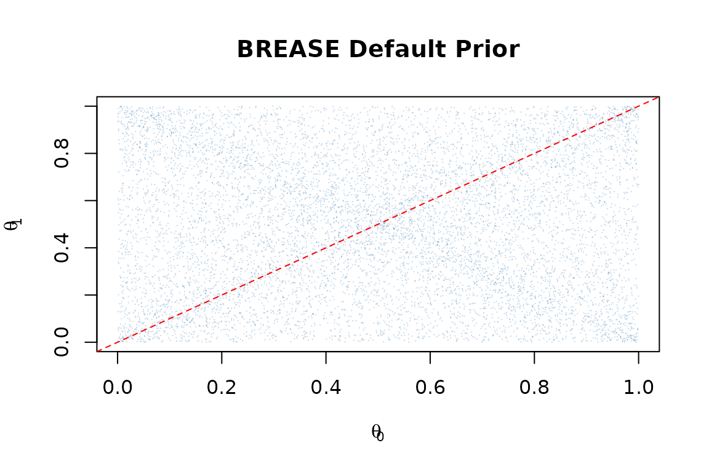
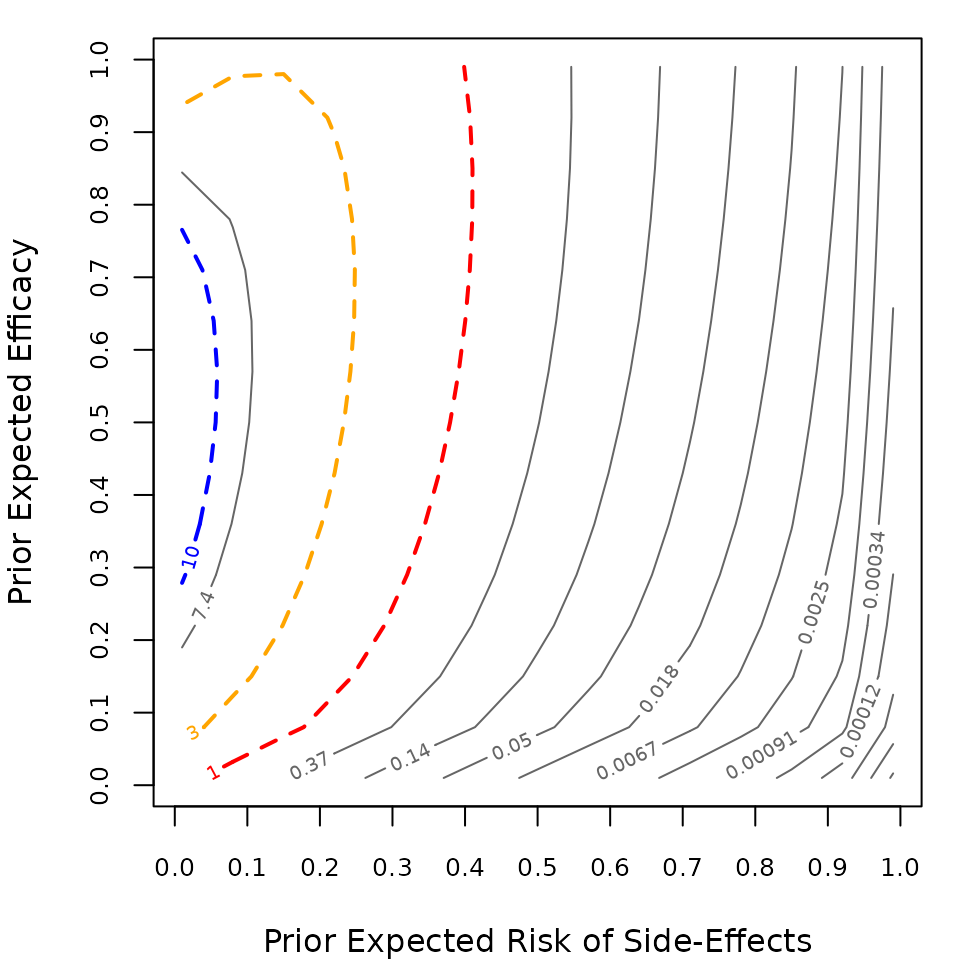

An introduction to the BREASE framework
Nicholas Irons and Carlos Cinelli
2026-02-16
Source:vignettes/brease.Rmd
brease.RmdOverview
The brease package implements the BREASE
(Baseline Risk,
Efficacy, and Adverse
Side Effects) framework for Bayesian
analysis of randomized controlled trials with binary treatment and
binary outcome, as described in Irons and Cinelli
(2025).
The BREASE Parameterization
Consider a two-arm binary experiment where:
- \(N_0\) subjects receive control and \(y_0\) have the event
- \(N_1\) subjects receive treatment and \(y_1\) have the event
The BREASE framework parameterizes the model in terms of three causal quantities:
- Baseline risk \(\theta_0 = P(Y(0) = 1)\): the probability of the event without treatment
- Efficacy \(\eta_e\): the fraction of would-be cases that are prevented by treatment
- Side-effect risk \(\eta_s\): the fraction of would-be non-cases that are harmed by treatment
The treatment group risk is then: \[\theta_1 = \theta_0(1 - \eta_e) + (1 - \theta_0)\eta_s\]
Specifying Priors
Independent Beta priors are placed on the three causal parameters:
- \(\theta_0 \sim \text{Beta}(\mu_0 n_0, (1-\mu_0)n_0)\)
- \(\eta_e \sim \text{Beta}(\mu_e n_e, (1-\mu_e)n_e)\)
- \(\eta_s \sim \text{Beta}(\mu_s n_s, (1-\mu_s)n_s)\)
The default prior BREASE(1/2, 0.3, 0.3; 2, 1, 1) places
uniform marginal priors on the outcome probabilities and centers both
efficacy and side-effect risk at 0.3 with prior sample size 1.
library(brease)
#> brease: Causally Sound Priors for Binary Experiments
#> Details: Irons and Cinelli (2025). Bayesian Analysis.
#> https://doi.org/10.1214/25-BA1506
# Simulate from the default prior
prior_samps <- sim_brease(10000)
plot(prior_samps$theta0, prior_samps$theta1,
pch = ".", col = adjustcolor("steelblue", 0.3),
xlab = expression(theta[0]), ylab = expression(theta[1]),
main = "BREASE Default Prior")
abline(0, 1, lty = 2, col = "red")
Example: Aspirin and Myocardial Infarction
The Physicians’ Health Study (1989) randomized 22,071 male physicians to aspirin or placebo and observed myocardial infarctions (MI).
# Data: 26 MIs in control (N=11,034), 10 MIs in treatment (N=11,037)
result <- brease(y0 = 26, y1 = 10, N0 = 11034, N1 = 11037)
result
#> Bayesian Analysis of Binary Experiment
#> Method: BREASE
#>
#> Data:
#> Control: y0 = 26, N0 = 11034 (rate = 0.0024)
#> Treatment: y1 = 10, N1 = 11037 (rate = 0.0009)
#>
#> Prior:
#> theta0 ~ Beta(1.00, 1.00) [mu0 = 0.50, n0 = 2.0]
#> eta_e ~ Beta(0.30, 0.70) [mue = 0.30, ne = 1.0]
#> eta_s ~ Beta(0.30, 0.70) [mus = 0.30, ns = 1.0]
#>
#> Posterior Summaries:
#> Baseline Risk (theta0) Mean: 0.00233 [0.00148, 0.00334]
#> Treatment Risk (theta1) Mean: 0.00105 [0.000525, 0.00179]
#> Risk Ratio (RR) Mean: 0.473 [0.205, 0.968]
#> Efficacy Fraction (EF) Mean: 0.527 [0.0321, 0.795]
#> Odds Ratio (OR) Mean: 0.473 [0.205, 0.968]
#> Risk Difference (RD) Mean: -0.00128 [-0.00244, -5.2e-05]
#>
#> Bayes Factor (BF10): 1.21
#> Bayes Factor (BF01): 0.823The posterior summaries show the risk ratio and efficacy fraction, and the Bayes factor quantifies the evidence for a treatment effect.
Sensitivity Analysis
We can examine how the Bayes factor changes across different prior specifications:
sens <- bf_seq(y0 = 26, y1 = 10, N0 = 11034, N1 = 11037,
mus_seq = seq(0.01, 0.99, length = 15),
mue_seq = seq(0.01, 0.99, length = 15))
contour_bf(sens)
Comparison with Other Methods
The package also implements the Independent Beta (IB) and Logit-Transform (LT) approaches for comparison:
# Independent Beta
ib_result <- brease_ib(y0 = 26, y1 = 10, N0 = 11034, N1 = 11037)
ib_result
#> Bayesian Analysis of Binary Experiment
#> Method: Independent Beta
#>
#> Data:
#> Control: y0 = 26, N0 = 11034 (rate = 0.0024)
#> Treatment: y1 = 10, N1 = 11037 (rate = 0.0009)
#>
#> Prior:
#> theta0 ~ Beta(1.00, 1.00)
#> theta1 ~ Beta(1.00, 1.00)
#>
#> Posterior Summaries:
#> Baseline Risk (theta0) Mean: 0.00245 [0.00163, 0.00345]
#> Treatment Risk (theta1) Mean: 0.00101 [0.000498, 0.00169]
#> Risk Ratio (RR) Mean: 0.427 [0.189, 0.799]
#> Efficacy Fraction (EF) Mean: 0.573 [0.201, 0.811]
#> Odds Ratio (OR) Mean: 0.426 [0.188, 0.799]
#> Risk Difference (RD) Mean: -0.00145 [-0.00258, -0.000372]
#>
#> Bayes Factor (BF10): 0.0493
#> Bayes Factor (BF01): 20.3COVID Vaccine Trial
As a second example, consider the Pfizer COVID-19 vaccine trial:
result_covid <- brease(y0 = 169, y1 = 9, N0 = 20172, N1 = 19965)
result_covid
#> Bayesian Analysis of Binary Experiment
#> Method: BREASE
#>
#> Data:
#> Control: y0 = 169, N0 = 20172 (rate = 0.0084)
#> Treatment: y1 = 9, N1 = 19965 (rate = 0.0005)
#>
#> Prior:
#> theta0 ~ Beta(1.00, 1.00) [mu0 = 0.50, n0 = 2.0]
#> eta_e ~ Beta(0.30, 0.70) [mue = 0.30, ne = 1.0]
#> eta_s ~ Beta(0.30, 0.70) [mus = 0.30, ns = 1.0]
#>
#> Posterior Summaries:
#> Baseline Risk (theta0) Mean: 0.00839 [0.0072, 0.0097]
#> Treatment Risk (theta1) Mean: 0.000502 [0.00024, 0.000851]
#> Risk Ratio (RR) Mean: 0.0602 [0.0282, 0.104]
#> Efficacy Fraction (EF) Mean: 0.94 [0.896, 0.972]
#> Odds Ratio (OR) Mean: 0.0597 [0.028, 0.103]
#> Risk Difference (RD) Mean: -0.00789 [-0.0092, -0.00665]
#>
#> Bayes Factor (BF10): 4.32e+35
#> Bayes Factor (BF01): 2.32e-36The very strong Bayes factor reflects the overwhelming evidence for vaccine efficacy.
References
Irons, N.J. and Cinelli, C. (2025). Causally Sound Priors for Binary Experiments. Bayesian Analysis. doi:10.1214/25-BA1506